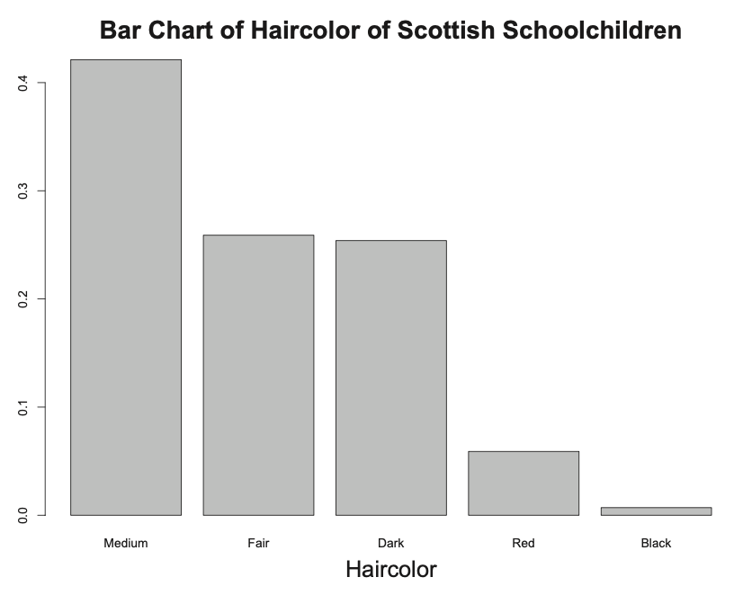
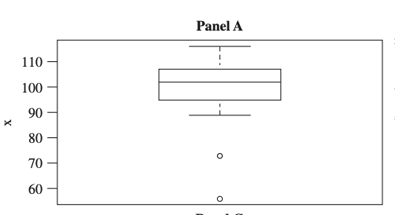
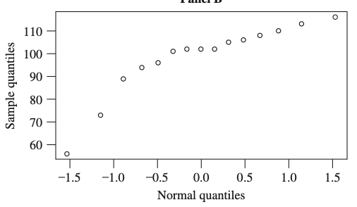

4 抽樣、統計量與信賴區間
本章以 HMC8 Chapter 4 為編號依據。現有講義涵蓋 Sections 4.1、4.2 與 4.4；其他課本小節不為了形式完整而硬加內容。教學上先喚醒統計量與估計量，再深化 order statistics，最後連到 confidence intervals。
\[ \boxed{\text{Recall}\longrightarrow\text{Deepen}\longrightarrow\text{Connect}} \]
本講義由蘇南誠老師編授。感謝黃怡婷老師提供原始數理統計講義檔案；本章保留原有英文術語與公式，並整理為可連續閱讀的教學形式。
學習目標
完成本章後，學生應能：
- 區分母體、樣本、統計量與估計值
- 推導常見統計量的抽樣分配
- 分析次序統計量
- 使用樞紐量建構信賴區間
- 正確解釋信賴水準與區間涵蓋率
必備的先備知識
常態、卡方、t、F 分配及聯合分配。
以下依原講義順序整理核心定義、定理、公式與例題。
教學路線
Stage 1 — Recall：樣本、統計量與估計量
4.1 Sampling and Statistics
Statistical Inference
A random variable X of interest, but its pdf \(f(x)\) or pmf \(p(x)\) is not known.
\(f(x)\) or \(p(x)\) can roughly be classified in one of two ways:
Pdf \(f(x)\) or \(p(x)\) is completely unknown.
The form of \(f(x)\) or \(p(x)\) is known down to a parameter \(\theta\), where \(\theta\) may be a vector.
Example 1 — Parametric Inference
\(X\) has an exponential distribution, where \(\theta\) is unknown.
\(X\) has a binomial distribution \(b(n, p)\), where \(n\) is known but \(p\) is unknown.
Parameter space
\(X\) has a density or mass function of the form \(f(x;\theta)\) or \(p(x; \theta)\) , where \(\theta\in\Omega\) for a specified set \(\Omega\).
For example, an exponential distribution \(\Omega = \{\theta | \theta > 0\}\).
\(\theta\) a parameter of the distribution.
Because \(\theta\) is unknown, we want to estimate it.
Random sample
Consider the sample observations that have the same distribution as \(X\).
Denote them as the random variables \(X_1, X_2, \ldots, X_n\), where \(n\) denotes the sample size.
Use lower case letters \(x_1, x_2, \ldots, x_n\) as the values or realizations of the sample.
Assume the sample observations \(X_1, X_2, \ldots, X_n\) are mutually independent.
It is called the random sample.
Statistics
定義 4.1
Let \(X_1, X_2, \ldots, X_n\) denote a sample on a random variable \(X\).
Let \(T= T(X_1, X_2, \ldots, X_n)\) be a function of the sample.
Then \(T\) is called a statistic.
Estimator and Estimate
Let \(X_1, X_2, \ldots, X_n\) denote a random sample on a random variable \(X\) with a density or mass function of the form \(f(x; \theta)\) or \(p(x; \theta)\), where \(\theta\in\Omega\) for a specified set \(\Omega\).
Consider a statistic \(T\), which is an estimator of \(\theta\).
\(T\) is formally called a point estimator of \(\theta\).
Call its realization \(t\) an estimate of \(\theta\).
Estimator
定義 4.2
Let \(X_1, X_2, \ldots, X_n\) denote a sample on a random variable \(X\) with pdf \(f(x; \theta)\), \(\theta\in\Omega\).
Let \(T= T(X_1, X_2, \ldots, X_n)\) be a statistic.
\(T\) is an unbiased estimator of \(\theta\) if \(E(T) = \theta\).
Nonparametric estimator
Let \(X_1, X_2, \ldots, X_n\) be a random sample on a random variable \(X\) with cdf \(F(x)\).
Make no assumptions on the form of the distribution of \(X\).
Often called a nonparametric estimator.
Discrete – Bar chart
Continuous – Histogram


Stage 2 — Deepen：次序統計量與樣本分位數
4.4 Order Statistics
Order statistics
Let \(X_1, X_2, \ldots, X_n\) denote a random sample from a distribution of the continuous type having a pdf \(f(x)\) that has support S = (a, b), where -∞ ≤ a < b ≤ ∞.
Let \(Y_1\) be the smallest of these \(X_i\), \(Y_2\) the next \(X_i\) in order of magnitude, \(\ldots\), and \(Y_n\) the largest of \(X_i\).
That is, \(Y_1 < Y_2 < \cdots < Y_n\) represent \(X_1, X_2, \ldots, X_n\) when the latter are arranged in ascending order of magnitude.
Call \(Y_i\), \(i = 1, \ldots, n\), the \(i\)th order statistic of the random sample \(X_1, X_2, \ldots, X_n\).
Joint pdf of order statistics
定理 4.1
Let \(Y_1 < Y_2 < \cdots < Y_n\) denote the \(n\) order statistics based on the random sample \(X_1, X_2, \ldots, X_n\) from a continuous distribution with pdf \(f(x)\) and support \((a, b)\).
Then the joint pdf of \(Y_i\), \(i = 1, \ldots, n\), is given by \[g(y_1, \ldots, y_n) =\left\{ \begin{array}{ll} n!f(y_1)f(y_2)\cdots f(y_n) & a<y_1<\cdots<y_n<b\\ 0 & \text{elsewhere} \end{array} \right.\]
Example 2
Let \(X\) denote a random variable of the continuous type with a pdf \(f(x)\) that is positive and continuous, with support \(S = (a, b)\), \(-\infty \le a < b < \infty\).
Let \(m\) denote a unique median.
Let \(X_1, X_2, X_3\) denote a random sample from this distribution.
Let \(Y_1 < Y_2 < Y_3\) denote the order statistics of the sample.
Find \(P[Y_2\le m]\).
Example 3
Let \(Y_1 < Y_2 < \cdots < Y_n\) denote the \(n\) order statistics based on the random sample \(X_1, X_2, \ldots, X_n\) from a continuous distribution with pdf \(f(x)\) and support \((a, b)\).
Find the marginal pdf of \(Y_k\).
Example 4
Let \(Y_1 < Y_2 < Y_3 < Y_4\) denote the order statistics of a random sample of size 4 from a distribution having pdf \[f(x) = \left \{ \begin{array}{ll} 2x& 0<x<1\\ 0 & \text{elsewhere} \end{array} \right .\]
Find the marginal pdf of \(Y_3\).
Example 5
Let \(Y_1 < Y_2 < \cdots < Y_n\) denote the \(n\) order statistics based on the random sample \(X_1, X_2, \ldots, X_n\) from a continuous distribution with pdf \(f(x)\) and support \((a, b)\).
Find the marginal pdf of \(Y_i\) and \(Y_j\), \(i<j\).
Special order statistics
Sample range of the random sample is given by \(Y_n- Y_1\).
Sample midrange is given by \((Y_1 + Y_n)/2\).
Sample median of the random sample is defined by \[Q2 = \left\{ \begin{array}{cc} Y_{(n+1)/2} & \text{if }n\text{ is odd}\\ (Y_{n/2} + Y_{(n/2)+1})/2 & \text{if }n\text{ is even} \end{array} \right .\]
Example 6
Let \(Y_1 < Y_2 < Y_3\) denote the order statistics of a random sample of size 4 from a distribution having pdf \[f(x) = \left \{ \begin{array}{ll} 1 & 0<x<1\\ 0 & \text{elsewhere} \end{array} \right .\]
Find the pdf of \(Z_1 = Y_3-Y_1\).
Recall – Quantiles
Let \(X\) be a random variable with a continuous cdf \(F(x)\).
For \(0 < p < 1\), define the \(p\)th quantile of \(X\) to be \(\xi_p = F^{-1}(p)\).
Sample quantiles
Let \(Y_1 < Y_2 < \cdots < Y_n\) denote the \(n\) order statistics based on the random sample \(X_1, X_2, \ldots, X_n\) from a continuous distribution with pdf \(f(x)\).
Let \(k\) be the greatest integer less than or equal to \([p(n + 1)]\).
Define \(Y_k\) as an estimator of the quantile \(\xi_p\).
Reason – Sample quantiles
The area under the pdf \(f(x)\) to the left of \(Y_k\) is \(F(Y_k)\).
Find \(E[F(Y_k)] = \frac{k}{n+1}\).
On the average, there is \(k/(n + 1)\) of the total area to the left of \(Y_k\).
Remark
Some statisticians define sample quantiles slightly differently from what we have.
For one modification with \(1/(n + 1) < p < n/(n + 1)\), if \((n + 1)/p\) is not equal to an integer, then the \(p\)th quantile of the sample may be defined as follows.
Write \((n + 1)p= k + r\), where \(k = [(n + 1)p]\) and \(r\) is a proper fraction, using the weighted average.
Then the pth quantile of the sample is the weighted average \[(1- r)Y_k + rY_{k+1},\] which is an estimator of the \(p\)th quantile.
As \(n\) becomes large, however, all these modified definitions are essentially the same.
Five-number summary
A five-number summary of the data consists of the following five sample quan-
Minimum (\(Y_1\))
The first quartile (\(Q_1=Y_{.25(n+1)}\))
The median (\(Q_2\))
The third quartile (\(Q_3=Y_{.75(n+1)}\))
The maximum (\(Y_n\))
Q1, Q2, and Q3 denote the first quartile, median, and third quartile of the sample.
Box plot
The five-number summary is the basis for a useful and quick plot of the data.
This is called a boxplot of the data.
The box encloses the middle 50% of the data and a line segment is usually used to indicate the median.
The extreme order statistics, however, are very sensitive to outlying points.
We make use of the box and whisker plots defined by John Tukey.
In order to define this plot, we need to define a potential outlier.
Let \(h = 1.5(Q_3- Q_1)\) and define the lower fence (LF) and the upper fence (UF) by \[\begin{array}{ccc} LF= Q_1- h & \text{and} & UF= Q_3 + h. \end{array}\]
Example 7
A random sample of size 15 on a random variable \(X\).
| 56 | 70 | 89 | 94 | 96 | 101 | 102 | 102 |
| 102 | 105 | 106 | 108 | 110 | 113 | 116 |
Minimum (\(Y_1 = 56\))
The first quartile (\(Q_1=Y_{.25(n+1)} = 94\))
The median (\(Q_2 = 102\))
The third quartile (\(Q_3=Y_{.75(n+1)} = 108\))
The maximum (\(Y_{15} = 116\))
\(h = 1.5 (108-94)\)
\(LF = 73\)
\(UF = 129\)

Quantile plots
Consider the location and scale family.
Suppose \(X\) is a random variable with cdf \(F((x- a)/b)\), where \(F(x)\) is known but \(a\) and \(b > 0\) may not be.
Let \(Z = (X- a)/b\); then \(Z\) has cdf \(F(z)\).
Let \(0 < p < 1\) and let \(\xi_{X,p}\) be the \(p\)th quantile of \(X\).
Let \(\xi_{Z,p}\) be the \(p\)th quantile of \(Z = (X- a)/b\).
We have \[p = P[X\le \xi_{X, p}] = P\left[Z\le \frac{\xi_{X,p}-a}{b}\right],\] and \(\xi_{X,p} = b\xi_{Z,p} +a\).
The quantiles of \(X\) are linearly related to the quantiles of \(Z\).
Quantile plots
Let \(X_1, \ldots, X_n\) be a random sample from the distribution of \(X\) amd let \(Y_1 < \ldots < Y_n\) be the order statistics.
For \(k = 1, \ldots, n\), let \(p_k = k/(n + 1)\).
Then \(Y_k\) is an estimator of \(\xi_{X,p_k}\).
Denote the corresponding quantiles of the cdf \(F(z)\) by \(\xi_{Z,p_k} = F^{-1}(p_k)\).
Let \(y_k\) denote the realized value of \(Y_k\).
The plot of \(y_k\) versus \(\xi_{Z,p_k}\) is called a q-q plot.
The linearity of such a plot indicates that the cdf of \(X\) is of the form \(F((x- a)/b)\).
Example 8

Stage 3 — Connect：由抽樣分配到區間估計
4.2 Confidence Intervals
Confidence intervals
定義 4.3
Let \(X_1, X_2, \ldots, X_n\) be a sample on a random variable \(X\), where \(X\) has pdf \(f(x; \theta)\), \(\theta\in\Omega\).
Let \(0 < \alpha < 1\) be specified.
Let \(L= L(X_1, X_2, \ldots, X_n)\) and \(U= U(X_1, X_2, \ldots, X_n)\) be two statistics.
The interval \((L, U)\) is a \((1- \alpha)\)100% confidence interval for \(\theta\) if \[1-\alpha = P_{\theta}[\theta\in (L, U)]\]
The probability that the interval includes \(\theta\) is \(1- \alpha\), which is called the confidence coefficient or the confidence level of the interval.
Efficiency of confidence intervals
定義 4.4
A measure of efficiency based on a confidence interval is its expected length.
Suppose \((L_1, U_1)\) and \((L_2, U_2)\) are two confidence intervals for \(\theta\) that have the same confidence coefficient.
Then we say that \((L_1, U_1)\) is more efficient than \((L_2, U_2)\) if \[E_θ[U_1- L_1] \le E_θ[U_2- L_2], \forall \theta\in\Omega.\]
本章摘要
本章從隨機樣本出發，研究統計量的分配，並以樞紐量把抽樣不確定性轉化為信賴區間。
常見錯誤
- 把參數視為隨機量來解釋頻率學派信賴區間
- 忘記抽樣分配依賴模型假設
- 混淆統計量與其觀察值
- 建構區間時不等式方向處理錯誤
章末練習
- 從本章選出三個關鍵定義，分別寫出數學形式、成立條件及一個例子。
- 選擇一個主要定理或方法，重做推導並標記每一步使用的假設。
- 從原講義例題挑選一題，完整寫出解題目標、方法選擇、計算與結果解釋。
- 設計一個會違反本章方法條件的反例，說明錯誤會出現在哪一步。
建議後續為本章補入：中文概念導讀、完整解答、課堂練習難度標記，以及與下一章的銜接說明。